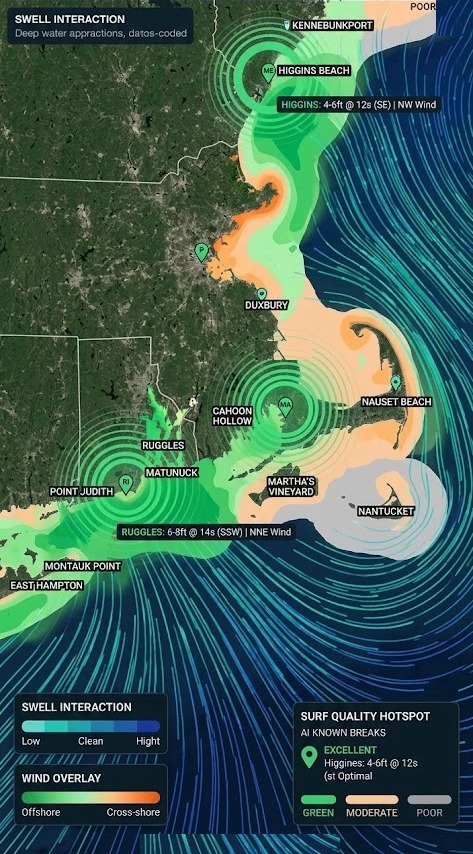

NE Surf Overview
Tue, Sept 22
HIGGINS:
4-6ft @ 12s (SE) | NW Wind
RUGGLES:
6-8ft @ 14s (SSW) | NNE Wind
Surf Quality Hotspot
Excellent
Higgins: 4-6ft @ 12s
NW wind · Optimal
Legend
Swell energy
LowCleanHigh
Wind on the beach
OffshoreOnshore